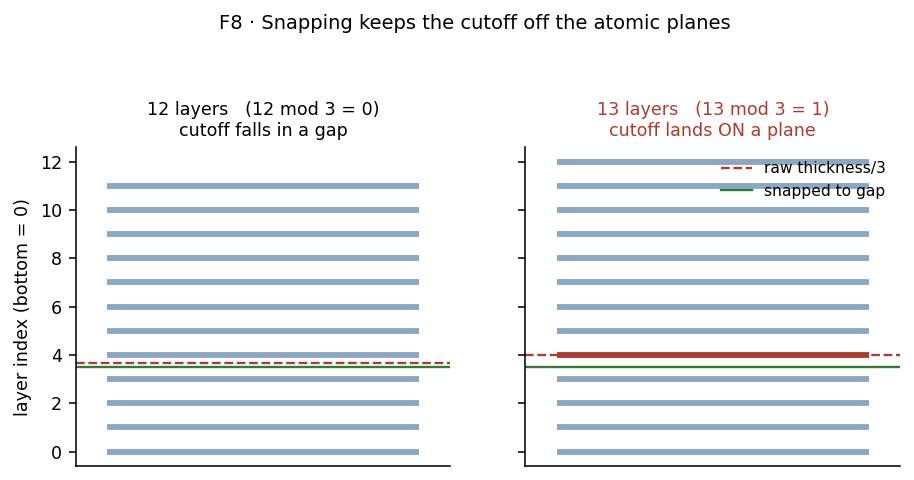

Stage 2 — Slabs and relaxation¶
Purpose¶
Turn a bulk cell into a surface: a slab with vacuum above it, its lower portion held fixed, relaxed under the potential. Everything in the surface half of the workflow happens on this geometry.
At a glance¶
Inputs |
a minimised bulk cell; a Miller index, layer count and vacuum thickness |
Outputs |
a relaxed slab; a freeze cutoff in \(z\) |
Code |
|
Validated for |
close-packed faces of face-centred-cubic materials |
Concepts¶
Slab. A finite stack of atomic layers, periodic in the two surface directions and terminated by vacuum above and below.
Frozen region. The lower part of the slab, held at bulk positions so the interior behaves like bulk rather than relaxing as a second free surface.
Freeze cutoff. The \(z\) coordinate separating frozen from mobile atoms.
Procedure¶
Route by classification (Stage 1). Three paths, because the three kinds of material need different geometry:
class
geometry template
element assignment
alloy
a face-centred-cubic template
symbols assigned randomly at the requested composition, from a seed
pure
the correct lattice for that element
the single element
oxide
a primitive cell extracted by symmetry analysis
from the cell
Stack to the requested thickness. For metals this is the layer count. For an oxide the layer count is ignored — one primitive repeat can contain several atomic planes, so repeats are chosen to reach a target thickness comparable to the metal slabs instead.
Add vacuum above the surface.
Compute the freeze cutoff from the slab’s own geometry: take the lower third of the total thickness, then snap the cutoff to the midpoint of the interlayer gap it falls in.
Relax with the frozen region held fixed.
Design choices¶
Why the freeze cutoff is computed rather than configured¶
A fixed value in ångström only suits the slab it was measured on. Change the layer count, or move to an oxide whose plane count differs from its repeat count, and the same number freezes the wrong fraction — possibly no layers at all, or nearly the whole slab.
Deriving it from the slab’s own thickness makes it correct for any layer count and any material without a per-material constant.
Why the cutoff is snapped to an interlayer gap¶
[!IMPORTANT] A raw one-third-of-thickness cutoff lands exactly on an atomic plane whenever the layer count is one more than a multiple of three. Floating-point noise then decides, atom by atom, which side of the boundary each one of that plane falls on — so a single layer is split arbitrarily between frozen and mobile, differently on different machines.

Figure 1. Why the cutoff is snapped. Compare the two panels: at twelve layers the raw cutoff falls harmlessly between planes, but at thirteen it lands exactly on one (drawn red), where floating-point noise decides atom by atom which side each one falls on. The green line is the snapped cutoff, always in a gap. Schematic.
Snapping to the midpoint of the gap means the cutoff can never coincide with a plane, and the frozen layer count is deterministic.
Why freeze at all, and why a third¶
An unconstrained slab has two free surfaces and no bulk. Holding the lower portion fixed makes the interior a bulk reservoir, so the quantity measured at the top surface is a surface property rather than a property of a thin film.
A third is a conventional compromise: enough frozen material that the mobile region sees a bulk-like substrate, few enough frozen layers that the surface region can relax freely.
Why the alloy path uses a template with random occupation¶
A disordered alloy has no small periodic cell. Rather than generate a bespoke structure per composition, the workflow takes a face-centred-cubic template and assigns element symbols randomly at the target composition, from a fixed seed.
This reproduces the composition and the lattice, but not short-range chemical order.
[!IMPORTANT] Local environments therefore reflect random mixing, not the real material’s ordering tendencies. Since later stages classify interstitial sites by their neighbour shell (Stage 4), the distribution of environments inherits that assumption, and so does \(w_e\) in the solubility sum.
Checks and failure modes¶
symptom |
meaning |
what to do |
|---|---|---|
the frozen layer count is not what the fraction implies |
the cutoff fell near a plane boundary |
expected; snapping rounds to whole layers deliberately |
an oxide slab is much thicker or thinner than the metal ones |
the layer count was used instead of the target thickness |
oxides ignore the layer count by design |
the relaxed slab bends or the surface reconstructs heavily |
too few frozen layers, or too little vacuum |
check both before doubting the potential |
the two surfaces of the slab relax differently |
expected — only the top is free |
measure at the top surface only |
a polar oxide termination |
the two faces are not equivalent and the slab carries a dipole |
excluded at Stage 1 for exactly this reason |
[!NOTE] Planned: the slab construction is validated for close-packed face-centred-cubic faces. Other Miller indices and body-centred-cubic surfaces are untested, which is why the latter is a skip rule rather than a supported path.